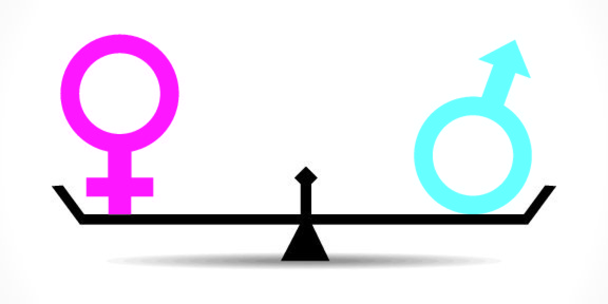

30.09.2020
Gender Equality

In the german "Grundgesetz" is written, that every person is equal. Nobody should be treated worse than someone else because of their gender, religion, color of skin or something else.
The "Grundgesetz" is a book with the general laws of Germany. But in Germany woman are often paid worse than their male colleagues. Mens in 2019 were paid 20% better than womans.
The Gender Pay Gap. Some people argue there is only 6% difference in payment of women and men, because of other factors that weren't included in the calculation. But still. 6% is to much and not fair.
The leading positions of companys are often just filled with male managers. In the "Bundestag", the german parliament, are only 33% woman. But woman arent less intelligent.
Woman are as good as men. The OECD tests how good students in different countries around the world are. In Germany female students were 2 points worse than male students. But
this doesnt necessary show that female students are less intelligent. In other countires woman are otfen better than mens. Woman are getting discriminated often.
They have to live with comments like: "Look at that ass", "Hi, wanna fuck?", "Hey Beauty, how are you", "Ey Honey, wanna drink something", and so much more. Some people even moan
when a woman passes them. Its called "Catcalling". It is so disrespectful and stupid. Why do people do that? I am a boy. I never experienced something like that and I think I never will.
I am happy. But I just had luck to be a boy. It could have come otherwise. Its not fair. And if I were a girl I wouldnt want to get catcalled, paid less or discriminated otherwise because of my gender.
It is just stupid and has to stop. Humans should be judged by their character, not gender, color of skin or something else. Humans shouldnt get discriminated. Humans are equal.
Humans should use their brain. Immanuel Kant once defined the categorical imperativ which says:
"Act only according to that maxim whereby you can, at the same time, will that it should become a universal law."-
The people who discriminate others should rethink what they do and keep the categorical imperativ in mind. I think the categorical imperativ is very good and helpful for the morality.